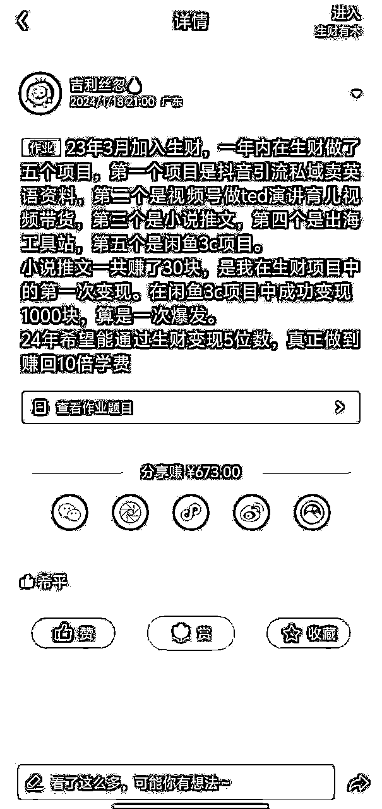
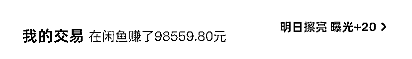
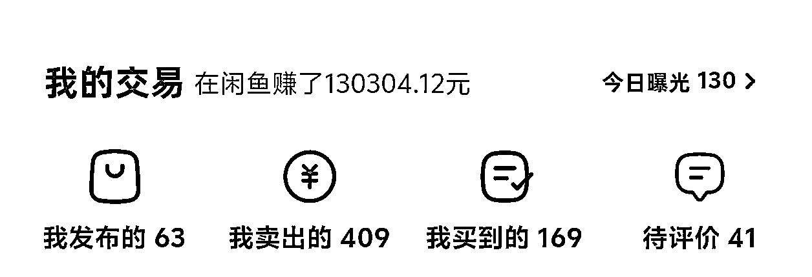
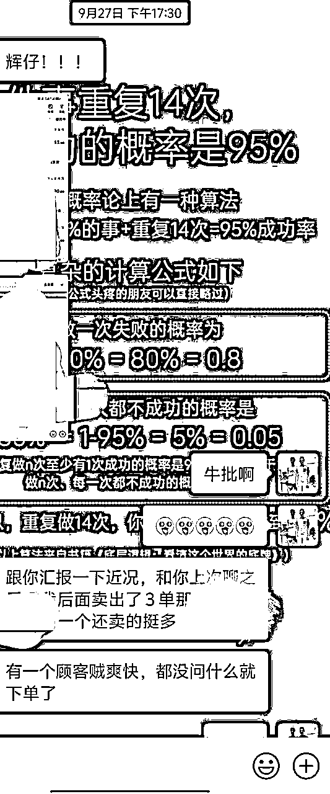
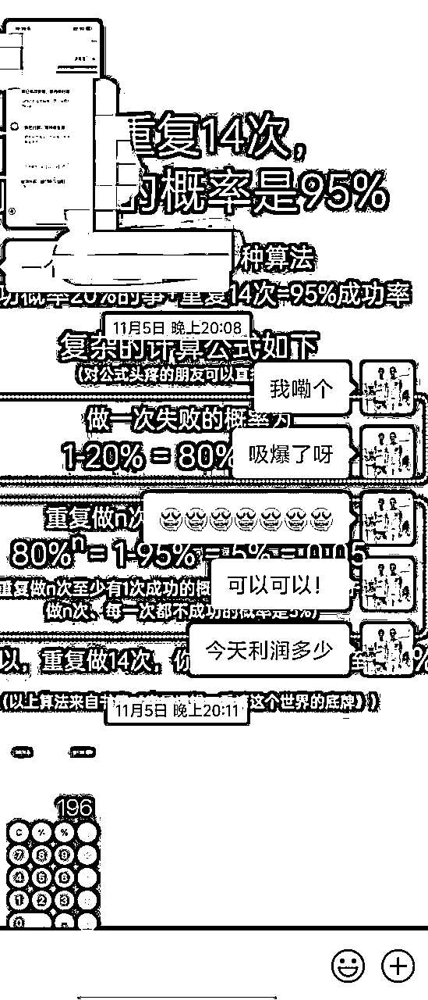

来源：https://kvaijcykrj4.feishu.cn/docx/WYjediXgAol58IxxVvqcZDeAnpb
纯感恩贴，感谢亦仁大大建立生财有术这个平台，同时也献给正处于跑通副业0-1的圈友们，若你们正处于迷茫的阶段，不妨看看我的来时路。
大家好，我是dunker辉仔，02年刚毕业的大学生，在今年3月份，参加生财的闲鱼高客单带货航海，至今已赚回20倍的生财门票！完成了我在年初定下的目标，通过生财变现5位数，真正做到赚回10倍学费。甚至做到了20倍！！！（为什么设这样一个目标？是因为之前有段时间特别难受，做的项目收益都很少，刚好亦仁大大那时发的一篇帖子提到：赚到10倍生财门票之前，所有的情绪都是假的）

321上数据！图一和图二是我其中2个做的比较好的店铺的数据，到目前为止我的其中一家店铺卖了总GMV为13w元的货，另外一家差不多10w。


感谢师傅动物园园长，在生财无私分享闲鱼卖货的知识，让我有机会认识到闲鱼赚钱的机会、方法。这一次航海，是我第一次全勤打卡，而且每一次打卡我都有很多感受和我对项目的思考可以写，印证了郭晓文老师在那次航海补给站时说的：“当你真正投入到项目中，每天的打卡5分钟就能完成，你会发觉打卡如此轻松。”
在这次3月份的闲鱼高客单航海期间，我的总变现是888元，在航海开始前的1个多星期，我就开始进行项目了。我给自己定下的目标是第一个月赚3000，但是在项目进行一个月时，我只做到400多块，给我难受的呀。但是我依旧做好最基础的工作，每天保持上链接，回复顾客，刷对标，把所有最基础的工作都做好，在第二个月终于达到3000，完成目标。
真的非常感谢生财，这半年做项目的经历，我现在看待赚钱的视角多了很多真实的体感，而不是脑子里空想出来的。通过这次航海，我真实的体验到：
项目闭环->收益逐渐扩大->将经验复制，矩阵化店铺，扩大收益->开始考虑建立团队，将工作分工明细，小伙伴发挥各自优势，或者将繁琐的事务外包自己专注做核心的事（28法则）->授人以鱼不如授人以渔，开始教身边的朋友做闲鱼，体验交付的过程


PS：非常感谢我的好兄弟小羊，他也是生财的圈友之一，听说我想带人一起做闲鱼，立刻推荐他的女朋友来参加，也是我的第一位交付对象，也深刻体会到自己做项目和教人做项目还是很大差距的，
从开始有建立团队的想法的那一刻，我看待项目的角度更多了，开始从一个团队leader的角度去看待项目的问题，开始理解每一个招聘岗位的需求，为什么需要招这么一个岗位，团队里每个成员需要怎么配合才能更加高效，扩大收益。因此，我开始理解合作的一些意义——将团队伙伴各自的优势放大。
也因此，我突然就能看懂boss直聘上每个招聘岗位背后的商业机会，开始理解亦仁大大@亦仁 在小灯塔说的——从各大求职平台挖掘项目信息。
随着闲鱼项目的持续发展和深入，明显能感觉到我的思维真正从打工人的思维转变成老板思维，真正将读书学到的认知化为己有，而不仅仅是纸上谈兵。
在生财参加的航海、做过的项目，加起来也有8个了，为什么我能把闲鱼做成功呢，我认为有以下2点：
1、好的项目圈子氛围。这次闲鱼航海我不仅仅是进了航海群，还在各种平台上搜索闲鱼无货源的信息，看他们平时在聊什么，关注一手的项目信息，让自己置身于一个全是闲鱼信息的空间（当然要会分辨出这些圈子和信息的可靠性）
2、多问教练，跟着千万赚百万。项目中遇到的卡点，我实操下来一两遍还是很迷茫的，就立马去问群里的教练。以前参加航海时，总是觉得自己的问题很傻，发到群里怕被别人笑。现在回想起来，我以前这种思想才傻，教练都有足够的项目经验，很多我们遇到的卡点，都是他们经历过并且解决了的，和他们交流会不断刷新你的项目认知，他们会告诉你什么重要，什么不重要，自己一个人瞎做反而效果没这么好。
以下是个人的一些经历，在写这篇航海好事的时候有感而发，感兴趣的圈友可以继续往下看~
23年12月份秋招上岸的我，其实找到一份收入蛮不错的工作，但是实习1个月下来发现这份工作给不了我最需要的，我想要锻炼我不靠公司平台的资源、不上班也能赚钱的能力。其实说白了就是不想上班哈哈哈。
当时是24年1月份，我想着咱还有半年才毕业呀，非常想体会一次做项目赚到钱，实现经济独立的感觉。刚好那时我在喜马拉雅听一个职业规划的播客，里面说一句话让我记到现在：“多做失败了损失很小，成功了回报很大的事儿！”
如果我在学校这最后半年做成功了项目，赚到10倍生财门票，不仅仅得到金钱，还得到很丰富的项目实战经验，还可以自己独立赚钱，这不就是我想要的回报很大的事儿吗？就算失败了，我也还有秋招找到的工作，回去老老实实上班学技能存钱。
再然后，就是我开始做闲鱼，参加闲鱼航海，再通过自己不断执行项目，现在不仅仅赚到20倍生财门票，还获得了以上所说的如此宝贵的经验，这对我来说是无价的。
最后收尾，借用《富爸爸》中的一句话，送给各位在航行路上的圈友：“大胆梦想，长远考虑，每天设定一个小目标，并且一小步一小步地来完成，这是获得长期成功的关键。”
希望我的经历能给各位圈友带来冲劲，给你们在航行路上注入满满的能量！我们一起生财有术！